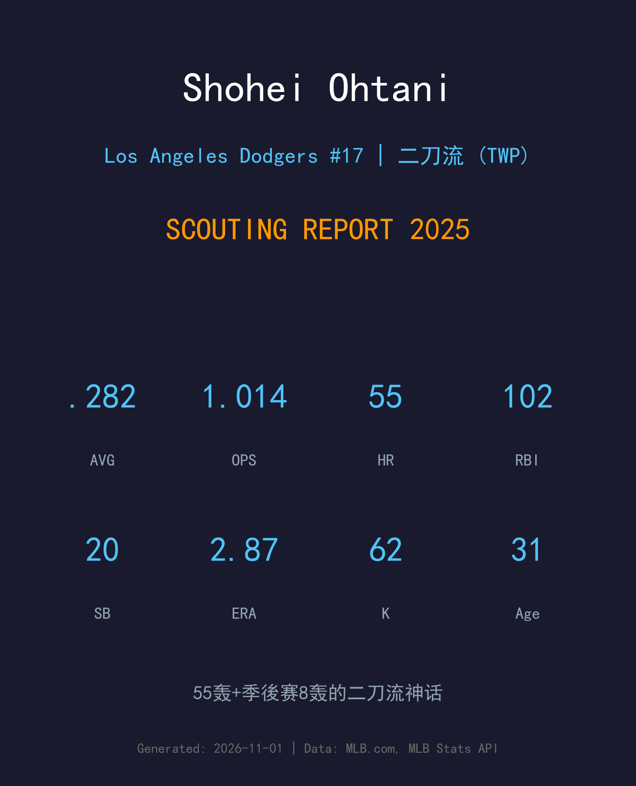
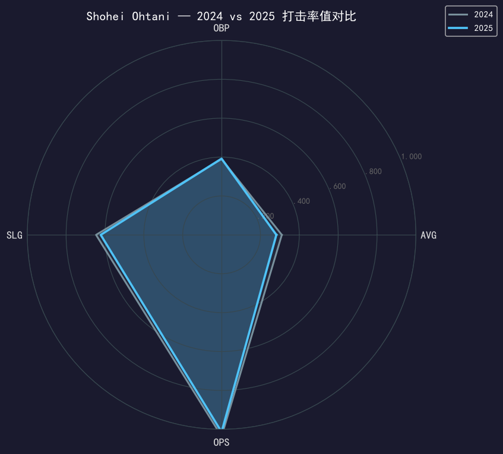
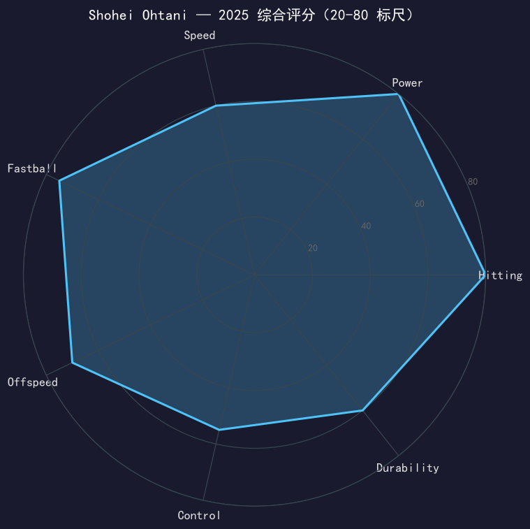

Los Angeles Dodgers #17 | 二刀流（DH + 投手） | 左打/右投 | 百年一遇

大谷翔平是两届美联MVP（2021/2023）、2024年国联MVP，史上第一位以二刀流身份包揽多个MVP的球员——贝比·鲁斯之后百年来唯一真正的大联盟二刀流。
2025 年是他道奇生涯的第二年，也是「完全体二刀流」回归的元年：打击端 158 场轰出 55 支全垒打（连续第二季 50+，刷新个人纪录）、102 分打点、OPS 1.014；投球端在汤米·约翰手术后首次回到轮值，14 场先发 2.87 自责分率、62 次三振、K/9 高达 11.87。季后赛更是历史级——17 场 8 轰 14 打点，外加 4 场先发，二刀流打满整个十月。
他不是「能投能打」的球员，而是「两边都是全明星级」的球员。31 岁的大谷，仍在拓宽人类对棒球运动员的想象边界。
2021 年以 46 轰 + 9 胜的史无前例数据打破「二刀流不可能」的成见；2023 年 44 轰 + 10 胜全票蝉联 MVP。
54 轰 59 盗的 50-50 神迹，加盟道奇第一年就拿下世界大赛冠军，完成美联→国联 MVP 通吃。
55 轰刷新个人纪录，投球端伤愈复出 2.87 ERA；季后赛 8 轰打穿整个十月，道奇完成世界大赛二连霸。
注：2025 是他 2023 年 9 月接受 Tommy John 手术后首次重返大联盟轮值，球队严格限制局数（场均 3.4 局），以循序渐进的方式重建投球负荷。

| 赛季 | G | AVG | OBP | SLG | OPS | HR | RBI | SB | BB | SO |
|---|---|---|---|---|---|---|---|---|---|---|
| 2024 | 159 | .310 | .390 | .646 | 1.036 | 54 | 130 | 59 | 81 | 162 |
| 2025 | 158 | .282 | .392 | .622 | 1.014 | 55 | 102 | 20 | 109 | 187 |
AVG 与 SLG 微降，但 OBP 反升 2 点至 .392——109 次保送创生涯新高，他成为了更「狡猾」的重炮。全垒打 54→55 刷新个人纪录，连续两季 50+ 是史上仅有的几次之一；盗垒从 59 大降到 20，则是球队有意识地保护他的身体用于投球端。
2025 赛季真实配球数据（MLB Stats API pitchArsenal）：
伤愈归来球速不降反升，接近 100 mph 的速球依旧是他的招牌。高转速带来的 ride 让打者的挥棒轨迹系统性偏低。
大幅横向位移的 sweeper 是主要挥空武器，对左打者从外侧横扫进垒，识别难度极高。
与 sweeper 互补的传统滑球，位移较小但更晚出现，用于两好球后的追杀与对右打者的内角攻击。
速差近 20 mph 的大曲球，改变打者节奏的关键变速球种。
三种辅助球种合计不到两成，但每一种都有明确的功能定位——卡特挤内角、伸卡抢好球、指叉速差收尾。五球种以上的完整武器库让打者的赛前准备形同虚设。
2024 年的 50-50 已经惊世骇俗，2025 年的大谷选择了不同的权衡：放弃一部分盗垒（59→20），把全部能量集中在长打上——55 轰刷新个人纪录，102 打点，.622 长打率连续第三年站上 .600。109 次保送说明投手已经不敢正面挑战他，而他用 .392 的 OBP 让每一个保送都转化为得分威胁。
14 场先发、场均 3.4 局的严格管理下，大谷投出了 2.87 ERA 与 11.87 K/9——三振效率仍是联盟顶级，98.4 mph 的速球宣告手臂完全康复。1-1 的战绩背后是球队对每一场投球的谨慎计算：他的价值不在常规赛堆局数，而在十月作为「秘密武器」的全负荷释放。
常规赛的每一个数字都在刷新历史：连续两季 55+ 全垒打的球员此前只有寥寥数人；同时投出 60+ 三振和 50+ 全垒打的球员，史上只有他自己。而真正的传奇写在十月：季后赛 17 场 8 轰 14 打点、外加 4 场先发 28 次三振——二刀流打满整个冠军之路，世界大赛二连霸的最大功臣，没有之一。

百年一遇的二刀流，两边都是全明星级
A+ 级 / 历史级超巨
道奇 2025 季后赛夺冠之路：外卡 2-0 红人 → NLDS 3-1 费城人 → NLCS 4-0 酿酒人 → 世界大赛 4-3 多伦多蓝鸟。
| G | PA | AVG | OBP | SLG | OPS | HR | RBI | BB | SO |
|---|---|---|---|---|---|---|---|---|---|
| 17 | 84 | .265 | .405 | .691 | 1.096 | 8 | 14 | 16 | 23 |
| G | GS | W-L | ERA | WHIP | IP | SO | BB |
|---|---|---|---|---|---|---|---|
| 4 | 4 | 2-1 | 4.43 | 1.13 | 20.1 | 28 | 7 |
大谷翔平与道奇的 10 年 7 亿美元合约还剩八年，而他已经把「值回票价」四个字提前兑现。2026 年他 32 岁——投球端的局数限制将逐步放宽，完全体二刀流的每一年都在创造历史。唯一的问题是：他的极限到底在哪里？
2026 目标：投球局数放宽至 80-100 局，冲击 60 轰
中期：成为史上首位单季 50 轰 + 10 胜的球员
长期：健康前提下，名人堂首批票选已是囊中之物；道奇球场的雕像也在规划中
大谷翔平出生于日本岩手县奥州市，高中时期就以「二刀流」轰动全国，2012 年进入北海道日本火腿斗士队。2016 年他拿下日职 MVP，2017 年宣布挑战大联盟，与洛杉矶天使签下合约。
大联盟的前六年，他用两届美联 MVP（2021/2023）重新定义了「投手」与「打者」的边界。2023 年 12 月，他与道奇签下 10 年 7 亿美元的创世纪合约——体育产业史上最大的合同——并在 2024 年以 50-50 赛季与国联 MVP 立刻证明了自己的价值。
2025 年，汤米·约翰手术后的他重新回到投手丘，用 55 轰 + 2.87 ERA 的双料表现，把「二刀流」三个字从噱头变成了传奇。在日本，他是国民英雄；在洛杉矶，他是冠军图腾；在棒球史上，他是正在书写的活历史。